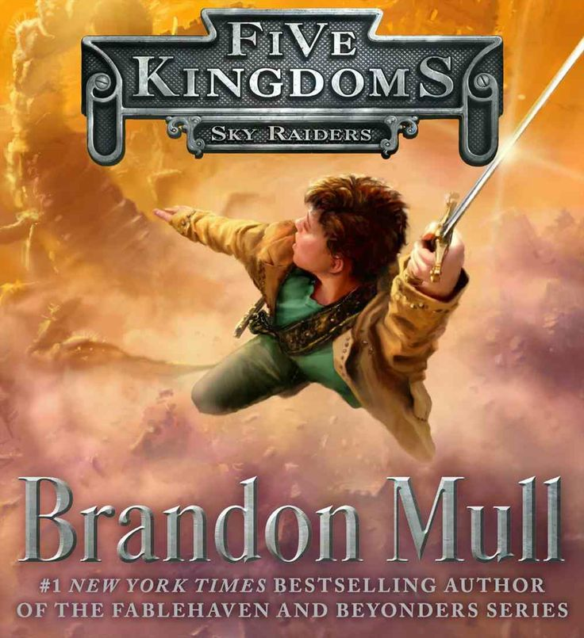

March 11, 2014
10-14
Fantasy
*****
Five Kingdoms: Sky Radiers
Sky Raiders is the first book in the Five Kingdoms series. It is one of Mull's best works. The book follows the main character Cole who ends up in a magical world far from home when he tries to save his friends who get kidnapped by slavers. Read about his adventures as he fights monsters, befriends a princess, and tries to save his friends from both worlds from ever present danger.
October 1, 1998
12-16
Fantasy
*****
The Edge Chronicles: Beyond the Deepwoods
Beyond the Deepwoods is the first book in the Edge Chronicles Series. Explore the Edge with Twig, a human who strays from the all important path of his woodtroll family. Join him for his growth through a series of misadventures as he discovers that the world is much bigger than he could have ever known.
Filters will go here